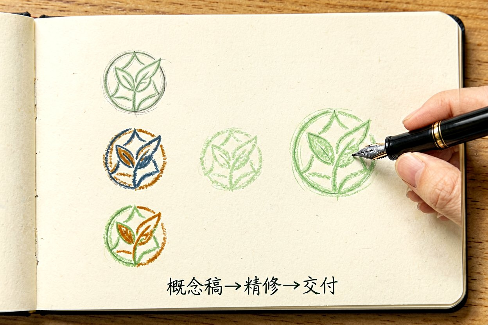
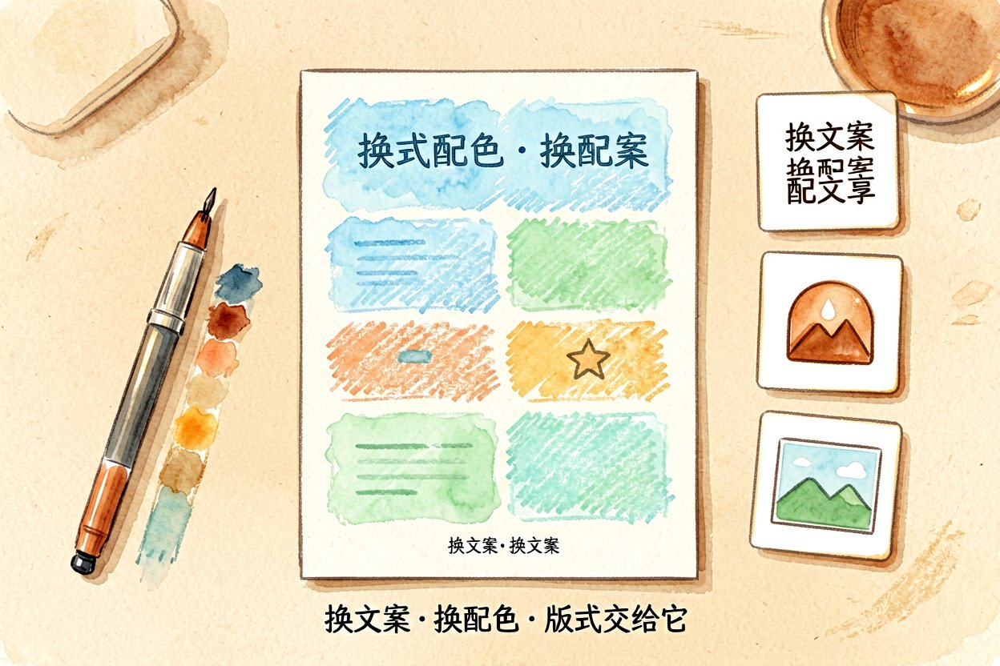
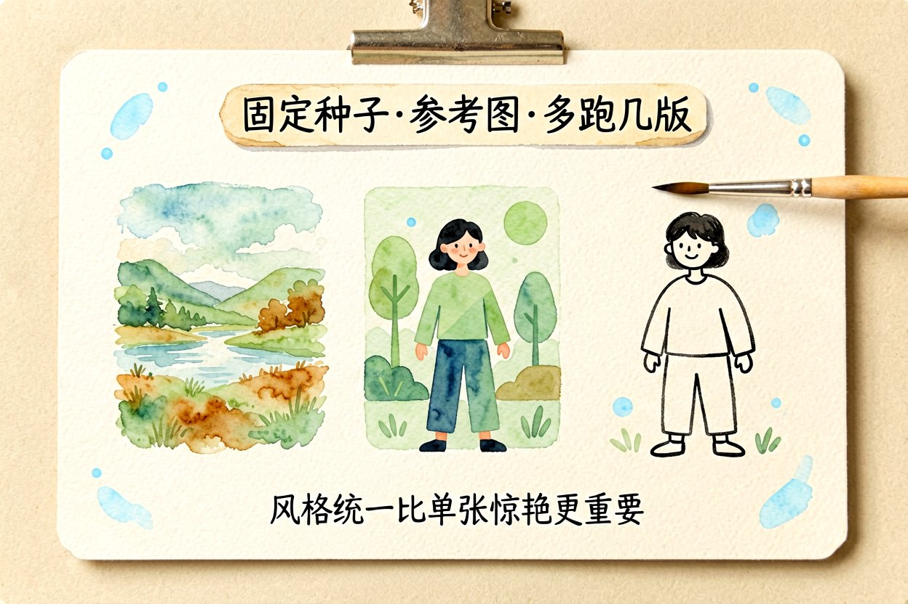
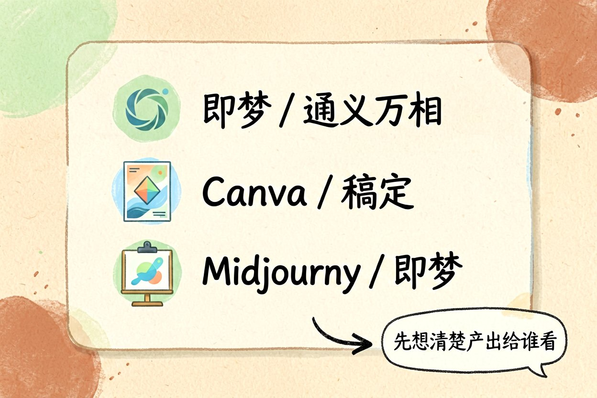
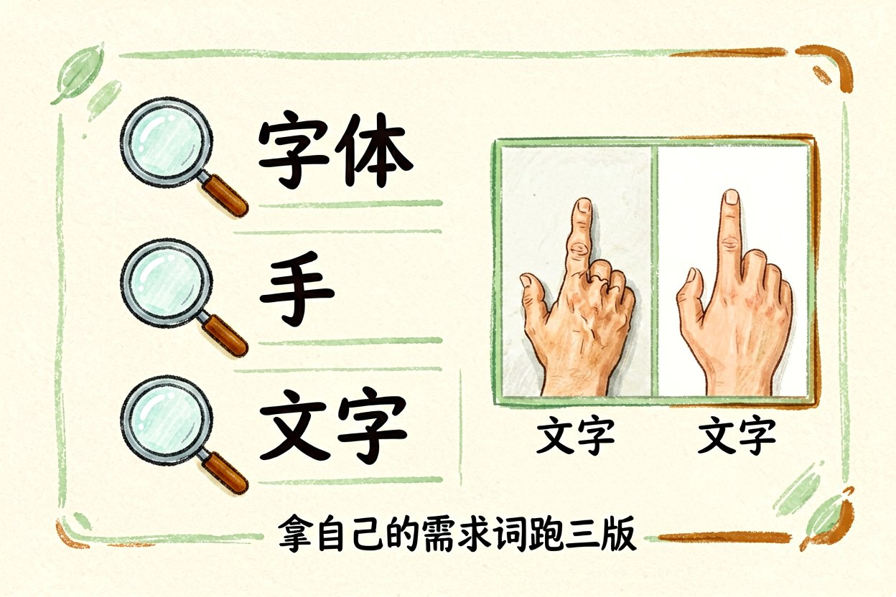
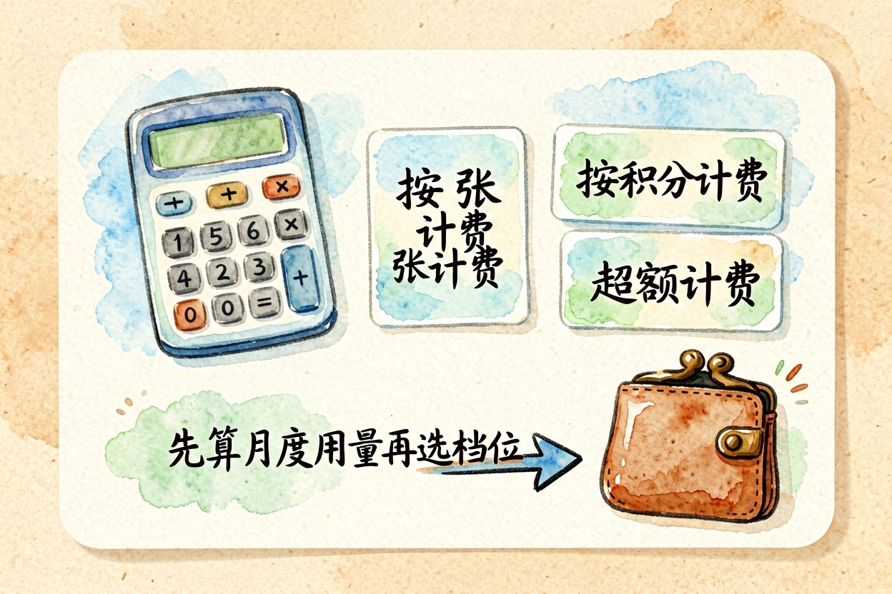
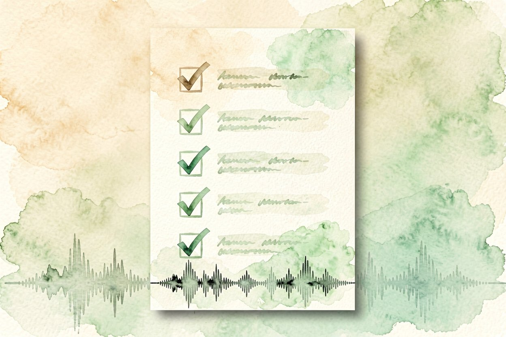

2026 主流 AI 设计工具横评：按活儿选不按名气选
做图做海报到底用哪家？这份对比把主流 AI 设计工具的能力、价格和坑点一次说清。
AI设计工具今年又多了好几款，但名气大不代表适合你。选错工具，返工比手画还累。下面按场景说人话，帮你对号入座而不是盲追爆款，省下的时间比省下的钱更值钱，这账很多人都算反了。
做 logo：要的是可控不是惊艳

logo 要的是识别度和可改，不是一张炫图。即梦、通义万相出概念快，但字体和笔画常乱，落地还得在矢量软件修。需要商用，先确认版权条款，别默认能卖。把 AI 当灵感板，比当最终交付更现实，省得侵权还不知道。概念稿跑十几版挑一个方向，再人工精修，是性价比最高的打法。别迷信"一键生成 logo"的宣传，那出来的多是通用图形，撞款概率高。
做海报：模板派更省心

海报讲究版式和字距。Canva、稿定这类带模板的，比纯生图工具稳得多，文字基本不乱。纯 AI 出图适合找氛围，真要排版还是模板派靠谱。尤其中文海报，字体和标点是重灾区，模板派能少掉很多头发。你只管换文案和配色，版式交给它，出错面小一大圈。中文标语清晰度一定要单独测，很多模型中文排版是弱项。
做插画：审美上限看模型

插画最吃模型审美。Midjourney 氛围感强，即梦中文提示词更顺。想要统一画风，固定种子和参考图比换工具有效。同一段提示词多跑几版挑，比换工具瞎试更出片，这是插画最划算的打法。风格统一比单张惊艳更重要，系列内容尤其如此，读者认的是一致感。
AI设计工具怎么挑：先列你要的活儿

tools = {
"做logo": "即梦 / 通义万相",
"做海报": "Canva / 稿定",
"做插画": "Midjourney / 即梦",
}把常做的三类列出来，对号入座，比追新更省时间。工具是手段，活儿才是目的。先想清楚产出给谁看、用在哪，再选，别被测评里的样图带偏，首页神图不代表你的日常产出。
出图质量怎么快速判断

别只看平台首页的样图，那都是挑过的。拿你自己的需求词跑三版，看字体、手、文字这三处翻不翻车。商用的再看版权页，免费生成不等于可售。判断快不快比参数表有用，十秒出图和两分钟出图，日更时的差距是实打实的。先小批量试再决定长期用哪家，挑工具时加一句"中文标语要清晰"，很多模型中文排版是弱项，这点不试不知道。
一个容易忽略的成本

很多 AI设计工具按张或按积分计费，量大时单价不低。先算月度用量再选档位，别被首充便宜骗了。免费档适合试水，真上量前一定看清超额怎么计费，不然月底账单会教你做人。团队用更要算总账，单人爽和全员顺，是两套账，别拿个人体验替团队决策。

本文信息核对于 2026-08-31。AI 产品的价格、免费额度与功能变动频繁，实际以各工具官网当前说明为准。